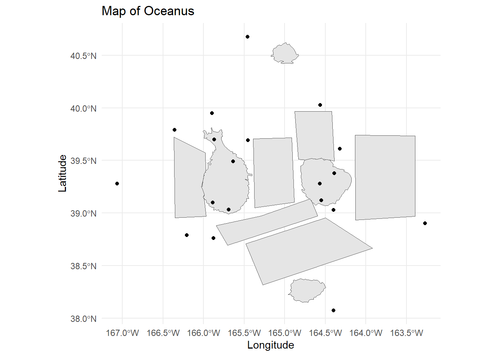
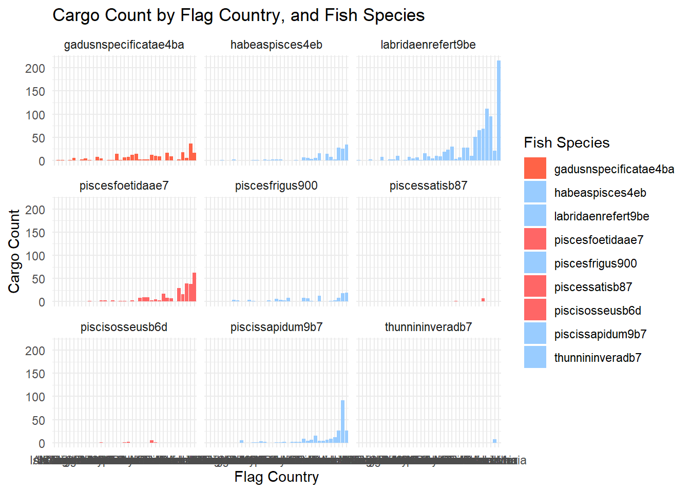
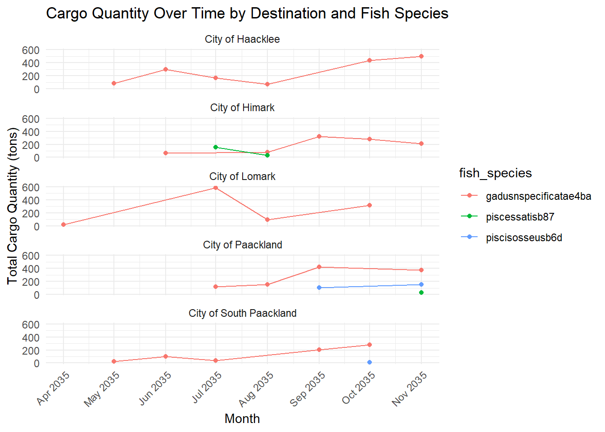
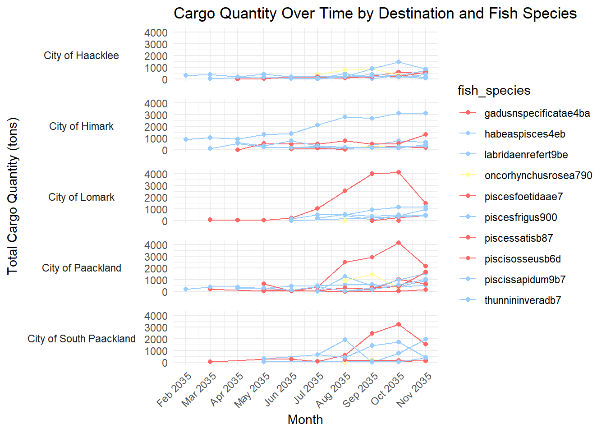
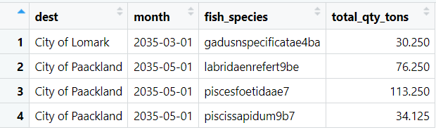
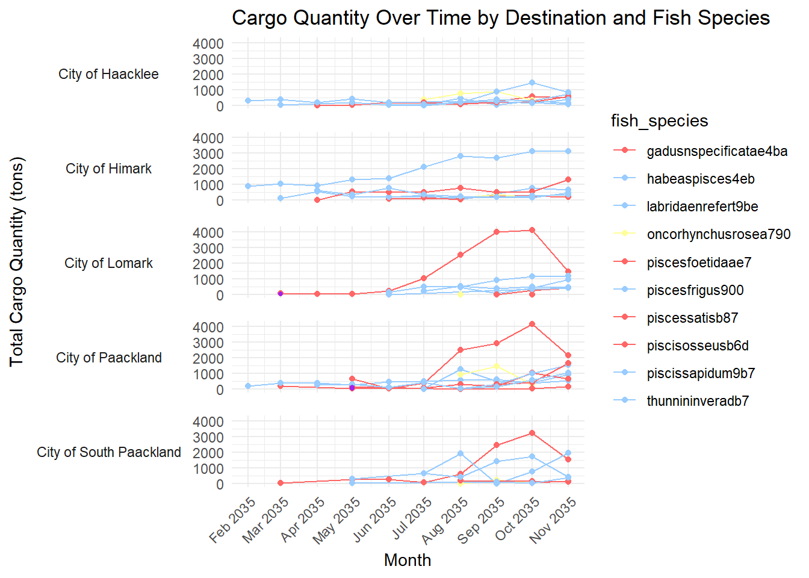
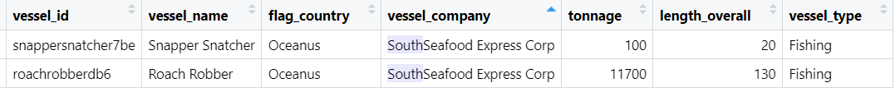
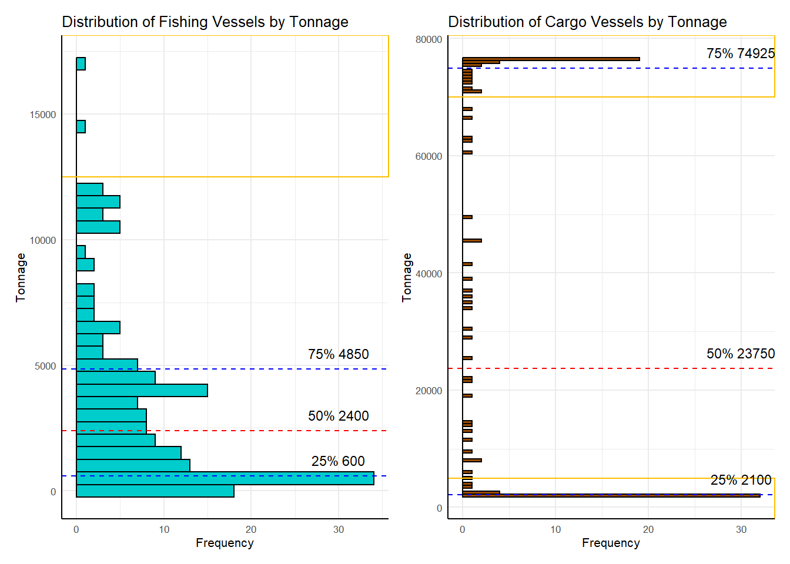
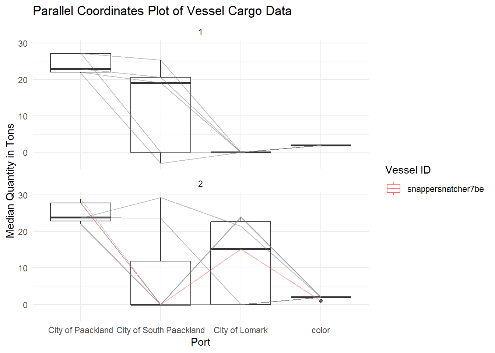
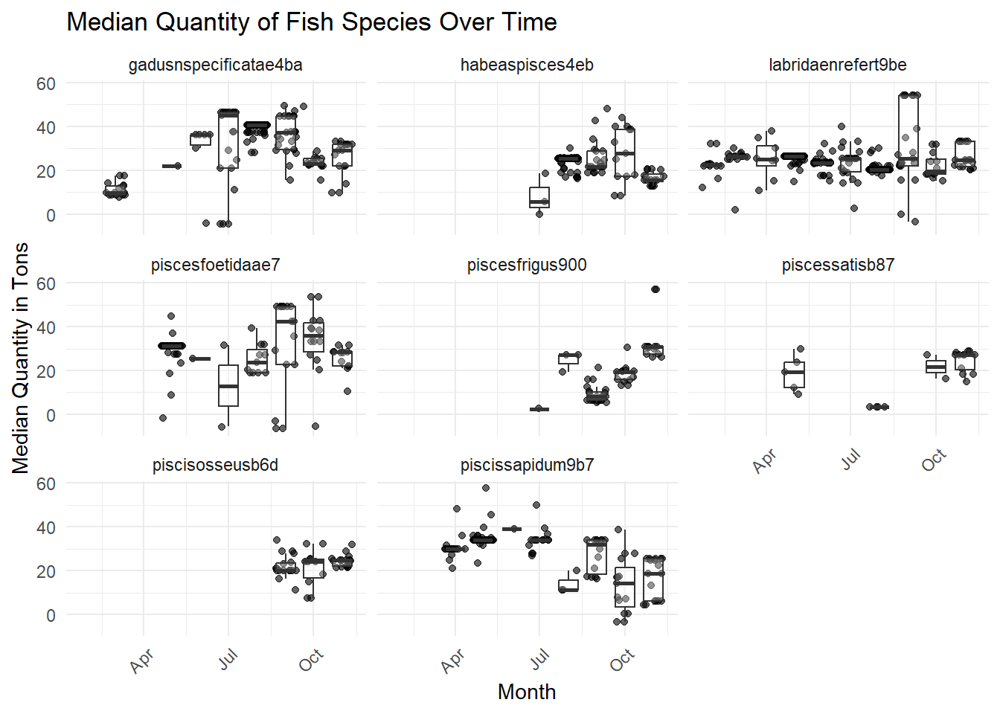

Code
pacman::p_load(jsonlite, tidyverse, tidyr,
knitr, lubridate, dplyr,
igraph, ggraph, ggdist, ggplot2,
SmartEDA, sf, tidygraph, reshape2, readr,
DT, patchwork,plotly)Seng Jing Yi
June 18, 2024
June 21, 2024
Testing out time series analysis based on mapped records
Importing packages
Importing data
tx_qty <- read_csv("data/tx_qty.csv")
ping_activity <- read_csv("data/ping_activity.csv")
E_Hbrpt_v <- read_csv("data/hbrpt.csv")
N_vessel <- read_csv("data/N_vessel.csv")
location_legend <- read_csv("data/location_legend.csv")
NL_City <- read_csv("data/NL_City.csv")
vessel_movement <- read_rds("data/rds/vessel_movement_data.rds")
nearest_tx_date <- read_csv("data/mapped_records.csv")Importing geographical data
Reading layer `Oceanus Geography' from data source
`C:\sengjingyi\ISSS608\Take-home_Ex\Take-home_Ex03\data\Oceanus Geography.geojson'
using driver `GeoJSON'
Simple feature collection with 29 features and 7 fields
Geometry type: GEOMETRY
Dimension: XY
Bounding box: xmin: -167.0654 ymin: 38.07452 xmax: -163.2723 ymax: 40.67775
Geodetic CRS: WGS 84Reading layer `Oceanus Geography' from data source
`C:\sengjingyi\ISSS608\Take-home_Ex\Take-home_Ex03\data\shp'
using driver `ESRI Shapefile'
Simple feature collection with 27 features and 7 fields
Geometry type: POINT
Dimension: XY
Bounding box: xmin: -167.0654 ymin: 38.07452 xmax: -163.2723 ymax: 40.67775
Geodetic CRS: WGS 84coords <- st_coordinates(OceanusLocations)
OceanusLocations_df <- OceanusLocations %>%
st_drop_geometry()
OceanusLocations_df$XCOORD <- coords[, "X"]
OceanusLocations_df$YCOORD <- coords[, "Y"]
OceanusLocations_df <- OceanusLocations_df %>%
select(Name, X.Kind, XCOORD, YCOORD) %>%
rename(Loc_Type = X.Kind)
ggplot() +
geom_sf(data = OceanusGeography) +
theme_minimal() +
labs(title = "Map of Oceanus",
x = "Longitude", y = "Latitude", color = "ID")
Merging the vessel details back with the mapped records in the dataframe nearest_tx_date
Exploring potentially suspicious records where matching algorithm matched to “non-fishing” vessels.
Type: Cargo_vessels
44 unique vessel_id returned for total 1898 unique cargo_ids
non_fishing_match <- mapped_records %>% filter(vessel_type != "Fishing")
non_fishing_match_vessel_id <- unique(non_fishing_match$vessel_id)
non_fishing_match_cargo_count <- unique(non_fishing_match$cargo_id)
non_fishing_match_country <- non_fishing_match %>%
group_by(flag_country, vessel_id, fish_species) %>%
summarise(cargo_count = n_distinct(cargo_id))
flag_country_order <- non_fishing_match_country %>%
group_by(flag_country) %>%
summarise(total_cargo_count = sum(cargo_count)) %>%
arrange(total_cargo_count) %>%
pull(flag_country)
# Reorder flag_country based on the total cargo count
non_fishing_match_country$flag_country <- factor(non_fishing_match_country$flag_country, levels = flag_country_order)
# manually assigning fish species color
species_colors <- c(
"gadusnspecificatae4ba" = "#FF6347", # Illegal
"habeaspisces4eb" = "#99CCFF", # Legal
"labridaenrefert9be" = "#99CCFF", # Legal
"piscesfoetidaae7" = "#FF6666", # Illegal
"piscesfrigus900" = "#99CCFF", # Legal
"piscessatisb87" = "#FF6666", # Illegal
"piscisosseusb6d" = "#FF6666", # Illegal
"piscissapidum9b7" = "#99CCFF", # Legal
"thunnininveradb7" = "#99CCFF" # Legal
)
# Create the plot
non_fishing_match_country_plot <- ggplot(non_fishing_match_country, aes(x = flag_country, y = cargo_count, fill = fish_species)) +
geom_bar(stat = "identity", position = "dodge") +
labs(x = "Flag Country", y = "Cargo Count", title = "Cargo Count by Flag Country, and Fish Species", fill = "Fish Species") +
scale_fill_manual(values = species_colors) +
theme(axis.text.x = element_text(angle = 45, hjust = 1),
legend.text = element_text(angle = 45, hjust = 1)) +
theme_minimal() +
facet_wrap(~ fish_species)
coord_flip()<ggproto object: Class CoordFlip, CoordCartesian, Coord, gg>
aspect: function
backtransform_range: function
clip: on
default: FALSE
distance: function
expand: TRUE
is_free: function
is_linear: function
labels: function
limits: list
modify_scales: function
range: function
render_axis_h: function
render_axis_v: function
render_bg: function
render_fg: function
setup_data: function
setup_layout: function
setup_panel_guides: function
setup_panel_params: function
setup_params: function
train_panel_guides: function
transform: function
super: <ggproto object: Class CoordFlip, CoordCartesian, Coord, gg>
[1] "seasphere38e" "transpacific5ada" "maritimematrix7755"
[4] "harborhelios585" "freightfusion141" "nauticalnirvana874"
[7] "cargocentric4d0" "transatlantic77d" "blueharbor2c1"
[10] "nauticalnexus1a5d" "freightfrontiers7134" "maritimemomentumfab"
[13] "vesselvanguard5d06" "maritimemover13f" "oceanicoasisd3f"
[16] "seasystem3e22" "vesselvictoryafd" "seawayspectra490"
[19] "aquatransit6bc" "seasentinel24e" "oceanicoracle9da"
[22] "maritimemiraclef85" "maritimemagnitude2e9" "harborhalo9dd6"
[25] "transoceane48" "seasolutions4d5" "transcontinentalcf3"
[28] "oceanicline3de" "seawayspectrumca2" "seasystem375"
[31] "harborhavenf91" "nauticalnexus6cc" "cargocynosure29d"
[34] "seasentry2e28" "vesselvistad0c" [1] "Orvietola" "Arreciviento" "Alverossia" "Lumakari"
[5] "Solovarossa" "Rio Solovia" "Lumindoria" "Luminkind"
[9] "Mawalara" "Riodelsol" "Azurionix" "Playa Solis"
[13] "Khamseena" "Brindisola" "Kethanor" "Nalaloria"
[17] "Oceanus" "Korvelonia" "Ariuzima" "Coralmarica"
[21] "Gavanovia" "Calabrand" "Yggdrasonia" "Nyxonix"
[25] "Isla Solmar" "Thessalandia" "Utoporiana" "Islavaria"
[29] "Kuzalanda" "Anderia del Mar"# loading packages for parallel plots
pacman::p_load(GGally, parallelPlot)
# summarizing cargo records into month
non_fishing_illegal_match_summary <- non_fishing_illegal_match %>%
mutate(month = floor_date(tx_date, "month")) %>%
group_by(dest, month, fish_species) %>%
summarise(total_qty_tons = sum(qty_tons),
vessel_count = n_distinct(vessel_id)) %>%
ungroup()
# plotting the summary over month
ggplot(non_fishing_illegal_match_summary, aes(x = month, y = total_qty_tons, color = fish_species, group = fish_species)) +
geom_line() +
geom_point() +
labs(x = "Month", y = "Total Cargo Quantity (tons)", title = "Cargo Quantity Over Time by Destination and Fish Species") +
facet_wrap(~ dest, ncol = 1) +
scale_fill_manual(values = species_colors) +
theme_minimal() +
scale_x_date(date_labels = "%b %Y", date_breaks = "1 month") +
theme(axis.text.x = element_text(angle = 45, hjust = 1))
Contrasting with the cargo data (full population)
tx_qty$tx_date <- as.Date(tx_qty$tx_date)
tx_by_mth <- tx_qty %>%
mutate(month = floor_date(tx_date, "month")) %>%
group_by(dest, month, fish_species) %>%
summarise(total_qty_tons = sum(qty_tons))
# fish species color with salmon
species_colors <- c(
"gadusnspecificatae4ba" = "#FF6666", # Illegal
"habeaspisces4eb" = "#99CCFF", # Legal
"labridaenrefert9be" = "#99CCFF", # Legal
"piscesfoetidaae7" = "#FF6666", # Illegal
"piscesfrigus900" = "#99CCFF", # Legal
"piscessatisb87" = "#FF6666", # Illegal
"piscisosseusb6d" = "#FF6666", # Illegal
"piscissapidum9b7" = "#99CCFF", # Legal
"thunnininveradb7" = "#99CCFF", # Legal
"oncorhynchusrosea790" = "#FFFF99" # Salmon
)
## plot
ggplot(tx_by_mth, aes(x = month, y = total_qty_tons, color = fish_species, group = fish_species)) +
geom_line() +
geom_point() +
labs(x = "Month", y = "Total Cargo Quantity (tons)", title = "Cargo Quantity Over Time by Destination and Fish Species") +
facet_wrap(~ dest, ncol = 1, strip.position = "left") +
scale_color_manual(values = species_colors) +
theme_minimal() +
scale_x_date(date_labels = "%b %Y", date_breaks = "1 month") +
theme(
axis.text.x = element_text(angle = 45, hjust = 1),
strip.placement = "outside",
strip.text.y.left = element_text(angle = 0), # Rotate facet labels
panel.spacing = unit(1, "lines") # Increase space between panels
) +
coord_cartesian(clip = "off") 
Comparing with the cargo mapped to suspicious vessel for South Seafood Corp
10 cargo mapped
Summary only to 2 ports, of 2 months

ss_cargo <- mapped_records %>%
filter(vessel_id %in% c("snappersnatcher7be", "roachrobberdb6"))
# formatting to align with tx_by_month dataframe
ss_by_month <- ss_cargo %>%
mutate(month = floor_date(tx_date, "month")) %>%
group_by(dest, month, fish_species) %>%
summarise(total_qty_tons = sum(qty_tons))
ggplot(tx_by_mth, aes(x = month, y = total_qty_tons, color = fish_species, group = fish_species)) +
geom_line() +
geom_point() +
geom_point(data = ss_by_month, aes(x = month, y = total_qty_tons), color = "purple", size = 1) + # Highlight points in purple
labs(x = "Month", y = "Total Cargo Quantity (tons)", title = "Cargo Quantity Over Time by Destination and Fish Species") +
facet_wrap(~ dest, ncol = 1, strip.position = "left") +
scale_color_manual(values = species_colors) +
theme_minimal() +
scale_x_date(date_labels = "%b %Y", date_breaks = "1 month") +
theme(
axis.text.x = element_text(angle = 45, hjust = 1),
strip.placement = "outside",
strip.text.y.left = element_text(angle = 0), # Rotate facet labels
panel.spacing = unit(1, "lines") # Increase space between panels
) +
coord_cartesian(clip = "off") 
Comparing with vessels of similar size to South Seafood Corp vessels.


Introducing filter to identify vessels of certain tonnage.
9 other small fishing vessels of <= 100 tonnage similar to Snapper Snatcher
7 other large vessels of >= 11700 tonnage similar to Roach Robber
Issue: No linked cargo to Roach Robber
ss_vessel <- N_vessel %>% filter(vessel_company %in% "SouthSeafood Express Corp")
# Returning vessels that are unusually small like Snapper Snatcher
sus_small_tonnage <- 100
sus_small_vessels <- N_vessel %>%
filter(tonnage <= sus_small_tonnage, vessel_type == "Fishing") %>%
mutate(sus_type = "abnormally_small")
# Returning vessels that are unusually large like Roach Robber
sus_large_tonnage <- 11700
sus_large_vessels <- N_vessel %>%
filter(tonnage >= sus_large_tonnage, vessel_type == "Fishing") %>%
mutate(sus_type = "abnormally_large")
sus_size_fish_vessel <- rbind(sus_small_vessels, sus_large_vessels)
# identifying matching cargo for small vessels
sus_size_vessels_cargo <- mapped_records %>%
filter(vessel_id %in% sus_size_fish_vessel$vessel_id) %>%
left_join(sus_size_fish_vessel %>%
select(vessel_id, sus_type), by = c("vessel_id" = "vessel_id"))
#write_csv(sus_size_vessels_cargo, "data/sus_vessel_cargo.csv")
sus_size_vessels_cargo_summary <- sus_size_vessels_cargo %>%
group_by(vessel_id, dest, sus_type) %>%
summarize(median_qty_tons = median(qty_tons, na.rm = TRUE)) %>%
ungroup()
# Create the parallel coordinates plot
data_wide <- sus_size_vessels_cargo_summary %>%
pivot_wider(names_from = dest, values_from = median_qty_tons) %>%
replace(is.na(.), 0)
# Assigning color for South Seafood vessels
vessel_colors <- c("snappersnatcher7be" = "#FF6666",
"roachrobberdb6" = "#FF6666",
"default" = "grey")
# Create a color column based on vessel_id
data_wide$color <- ifelse(data_wide$vessel_id %in% names(vessel_colors),
vessel_colors[data_wide$vessel_id],
vessel_colors["default"])
# Create the parallel coordinates plot with facet wrap for sus_type
ggparcoord(data = data_wide,
columns = 3:ncol(data_wide), # Columns for median_qty_tons
groupColumn = 1, # Column index for vessel_id
scale = "globalminmax",
alphaLines = 0.5,
boxplot = TRUE) +
scale_color_manual(values = vessel_colors) +
labs(title = "Parallel Coordinates Plot of Vessel Cargo Data",
x = "Port",
y = "Median Quantity in Tons",
color = "Vessel ID") +
theme_minimal() +
facet_wrap(~ sus_type, ncol = 1)
Creating parallel plot for median fish quantity cargo declared at each port.
# summarizing median cargo qty
vessels_cargo_summary <- mapped_records %>%
mutate(month = floor_date(tx_date, "month")) %>%
group_by(vessel_id, dest, fish_species, month) %>%
summarize(median_qty_tons = median(qty_tons, na.rm = TRUE)) %>%
ungroup()
# filter of destination of interest
vessel_cargo_summary_paackland <- vessels_cargo_summary %>%
filter(dest == "City of Paackland")
# converting to format for plot
data_wide <- vessel_cargo_summary_paackland %>%
pivot_wider(names_from = month, values_from = median_qty_tons)
# scatter plot
ggplot(vessel_cargo_summary_paackland, aes(x = month, y = median_qty_tons)) +
geom_jitter(alpha = 0.6) + # Scatter plot with jitter for each vessel
geom_boxplot(aes(group = month), alpha = 0.3, outlier.shape = NA) + # Box plot
labs(title = "Median Quantity of Fish Species Over Time",
x = "Month",
y = "Median Quantity in Tons") +
facet_wrap(~ fish_species) +
theme_minimal() +
theme(axis.text.x = element_text(angle = 45, hjust = 1))